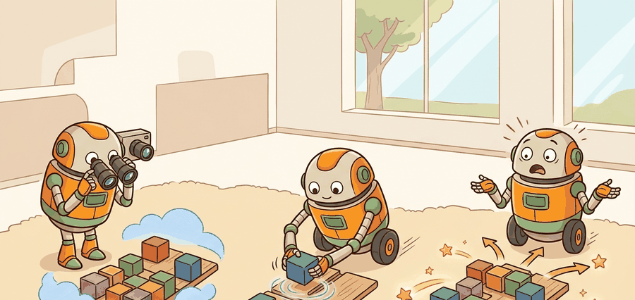

Section 35.4: Large behavior models and rigorous evaluation
"The world is an exam where the answer key changes after every action."

Figure 35.4A: Section 35.4: Large behavior models and rigorous evaluation is easier to reason about when the figure shows the concept, evidence path, and action consequence in one physical situation.
A Careful Control Loop
Figure 35.4 gives this page a compact map of the interface. Read it left to right, then check whether the surrounding prose names the same observation, action, and evidence contract.
Figure 35.4: A closed-loop map for Large behavior models and rigorous evaluation. The diagram forces the reader to name the input, model boundary, action interface, and evidence record before trusting the system.
Agent Checklist Synthesis
Curriculum, depth, and self-containment. Large behavior models need evaluation slices that expose where scale helps and where a specific embodiment regresses. This page should therefore define the interface, state its assumptions, give a concrete example, and connect back to the perception-action loop from earlier chapters.
Production and evaluation contract. Report wins with matched evidence, then keep negative slices in diagnostics and experiment logs. The figure, code fragment, tool table, exercise, warning, and bibliography on this page are meant to support one construct-matched artifact rather than a loose collection of claims.
Checklist Memory Anchor
Ask four questions before accepting the method: what changed in the loop, which tool makes it reproducible, which failure would fool the metric, and which primary source backs the claim?
Mini Audit Exercise
For this section, write one evidence row with observation, action, metric, dataset or robot, seed, and failure label. Then explain why comparing that row with a result from a different setup would be invalid.
Big Picture
Large behavior models and rigorous evaluation is one lens on robot foundation models and cross-embodiment learning. We study it because an embodied agent needs decisions that survive contact with noisy sensors, delayed effects, and changing environments.
What This Section Develops
This section develops the technical contract for large behavior models and rigorous evaluation into a usable mental model. First we define the object of study, then we connect it to the agent loop, then we test it with a compact implementation.
The key question is practical: what must the agent know, what can it observe, what action is available, and what evidence shows that the action worked?
Action Is The Test
A representation earns its place when it changes the measurable action interface. In large behavior models and rigorous evaluation, the reader should keep asking which decision becomes easier, safer, or more reliable.
Theory
We can view the agent at time $t$ as receiving an observation $o_t$, maintaining an internal state estimate $\hat s_t$, choosing an action $a_t$, and observing a consequence $o_{t+1}$. The section topic changes one part of this loop, but the loop itself stays fixed.
The practical design rule is to make the interface explicit. Inputs, outputs, assumptions, timing, and failure modes should be named before a model is trained or a controller is tuned.
Mechanism
The mechanism is a sequence of transformations: observe, encode, estimate, choose, execute, monitor. Each transformation should have a measurable contract, otherwise debugging collapses into guessing.
Worked Example
Consider a simulated tabletop agent. A camera observation locates a block, a state estimator converts pixels into an approximate pose, a policy selects a motion, and a controller executes that motion. If the block slips, the loop must notice and recover rather than declare success too early.
Code Fragment 35.4.1 shows the minimal executable diagnostic for this section's method.
Expected output: the printed trace for Large behavior models and rigorous evaluation should expose the method configuration, the measured evidence field, and the failure label. If one of those fields is missing or unchanged under the perturbation, the example is not yet an evaluation artifact.
Library Shortcut
The from-scratch fragment is for understanding. In a practical system, use OpenCV, PyTorch, Detectron2, Ultralytics, Segment Anything, DINOv2, SigLIP, and Gaussian Splatting tools to handle environment interfaces, batching, physics, data formats, logging, and model loading. The shortcut removes boilerplate so the engineering attention goes to task design, evaluation, and failure recovery.
Practical Recipe
Write the observation, action, and success metric before choosing a model.
Build a baseline that is simple enough to debug by inspection.
Add the library implementation only after the baseline behavior is understood.
Record failures as structured cases: perception error, state error, planning error, control error, or evaluation error.
Run at least one perturbation test before trusting the result.
Common Failure Mode
The common mistake is to evaluate a component in isolation and then assume the closed loop will inherit that score. Embodied systems often fail at the interfaces between components.
Practical Example
A robotics team using large behavior models and rigorous evaluation should log not only final success, but intermediate observations, chosen actions, controller status, and recovery events. The logs reveal whether the method is solving the task or merely passing the easiest episodes.
Research Frontier
Frontier systems increasingly combine learned policies with structured constraints, tool use, large datasets, and simulation-driven evaluation. Claims from vendor releases should be treated as frontier watch items until independent evaluations or reproducible artifacts appear.
Self Check
Can you name the observation, state estimate, action, success metric, and most likely failure mode for large behavior models and rigorous evaluation? If not, the system boundary is still too vague.
Builder's Deep Dive
Large behavior models and rigorous evaluation becomes useful when it is tied to a closed-loop contract. In this chapter on Robot Foundation Models and Cross-Embodiment Learning, the contract names the observation stream, the state estimate, the action representation, the timing budget, and the evaluation artifact. Without that contract, a model can look capable in a notebook while failing the first time a sensor drops a frame or a controller saturates.
The graduate-level habit is to separate three claims. The conceptual claim explains why the method should help. The systems claim explains which interface it changes. The evidence claim records which measurement would convince a skeptical builder. This separation keeps theory, implementation, and evaluation connected without letting any one of them pretend to prove the other two.
Practical Tool Choices For This Section
Tool or Library
Role in the Topic
Builder Advice
LeRobot
Keep datasets, policies, and evaluation records portable across labs.
Use it when the experiment needs a maintained interface, reproducible artifacts, or a standard dataset contract.
openpi
Study open implementations of pi-zero family models and action interfaces.
Use it when the experiment needs a maintained interface, reproducible artifacts, or a standard dataset contract.
Isaac GR00T
Frontier-watch humanoid foundation models, synthetic data, and post-training workflows.
Use it when the experiment needs a maintained interface, reproducible artifacts, or a standard dataset contract.
Gemini Robotics
Frontier-watch closed VLA and embodied-reasoning systems with vendor caveats.
Use it when the experiment needs a maintained interface, reproducible artifacts, or a standard dataset contract.
Hugging Face datasets and model cards
Record embodiment metadata, licensing, and reproducibility limits.
Use it when the experiment needs a maintained interface, reproducible artifacts, or a standard dataset contract.
Implementation Recipe
A robust implementation starts with a tiny, inspectable baseline and only then moves to Gymnasium or PettingZoo. The baseline should log inputs, outputs, units, timestamps, and termination conditions. The library version should produce the same artifact schema, so the comparison is a same-task comparison rather than a story assembled from separate experiments.
Write a one-paragraph task contract with observation, action, success, and failure fields.
Start with the smallest simulator, dataset, or wrapper that exposes the task contract faithfully.
Run one deterministic smoke test and one perturbation test before scaling.
Save a single result artifact containing configuration, seed, metrics, videos or traces, and failure labels.
Compare methods only when one script evaluates them on the same task panel.
# Build one evidence record for Large behavior models and rigorous evaluation.
# The same schema should be used for the baseline and the library shortcut.
from dataclasses import dataclass, asdict
@dataclass
class EvidenceRecord:
section: str
tool: str
observation: str
action: str
metric: str
perturbation: str
record = EvidenceRecord(
section="35.4",
tool="Gymnasium",
observation="record after the perturbation run: sensor or state input",
action="record after the perturbation run: control or decision output",
metric="record after the perturbation run: construct-matched success metric",
perturbation="record after the perturbation run: delay, noise, domain shift, or contact change",
)
print(asdict(record))
Code Fragment 35.4.2 records the method-specific evidence schema for testing Large behavior models and rigorous evaluation with Gymnasium while keeping results comparable to PettingZoo and ROS 2.
Teaching Move
Ask readers to fill the evidence record before they touch model code. The exercise exposes vague task definitions early, when they are cheap to repair.
Failure Analysis Pattern
When Large behavior models and rigorous evaluation fails, avoid labeling the whole method as weak. First assign the failure to perception, state estimation, planning, control, timing, data coverage, or evaluation. Then rerun one controlled perturbation that isolates the suspected cause. This pattern turns a disappointing rollout into a reusable diagnostic asset.
Key Takeaway
Large behavior models and rigorous evaluation is useful when it makes the perception-action loop more reliable, not when it merely adds a more impressive model name.
Exercise 35.4.1
Design a method-matched experiment that tests this section's idea in simulation. Specify the environment, observations, actions, metric, and one perturbation.